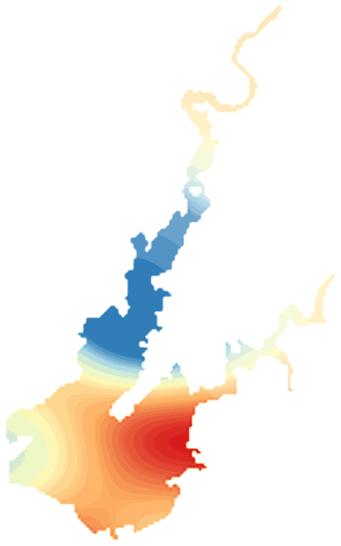

LakeScope › CA
Folsom Lake today
Updated 2026-11-14 - Atlas Labs
Clear water, 64°F water, level falling, 3 ft below normal, calm this morning.
Water level
397.29 ft
California Dept. of Water Resources - 2026-11-13
7-day trend: falling (-0.72 ft). Compared with normal for this date: -3.0 ft (same weeks, 2016-2025).
Water clarity and algae
Clear water Last clear view: a few days ago.
Surface temperature
64°F
seen from space on 2026-11-12

Ice
Open - 0% ice cover
Estimate from weather and satellite, not a measurement. Check the ice yourself before going on it.
Weather, next 3 days
| Day | Sky | High / low | Wind | Rain |
|---|---|---|---|---|
| Saturday | Areas Of Fog then Mostly Sunny | 62 / 52°F | 6 mph S | 1% |
| Sunday | Cloudy then Light Rain | 62 / 53°F | 12 mph SSE | 100% |
| Monday | Chance Light Rain then Partly Sunny | 57 / 44°F | 3 mph S | 35% |
Sunrise 06:46 - sunset 16:51 - Waxing crescent. National Weather Service.
Get the LakeScope app: alerts and the 3-D view of Folsom Lake